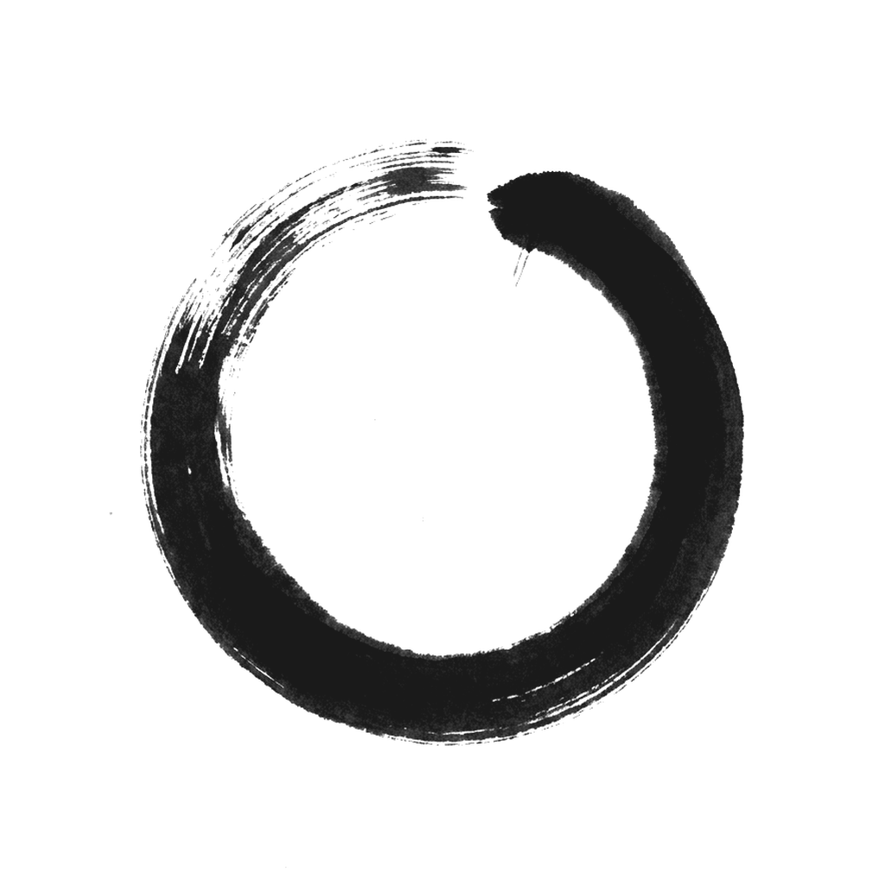
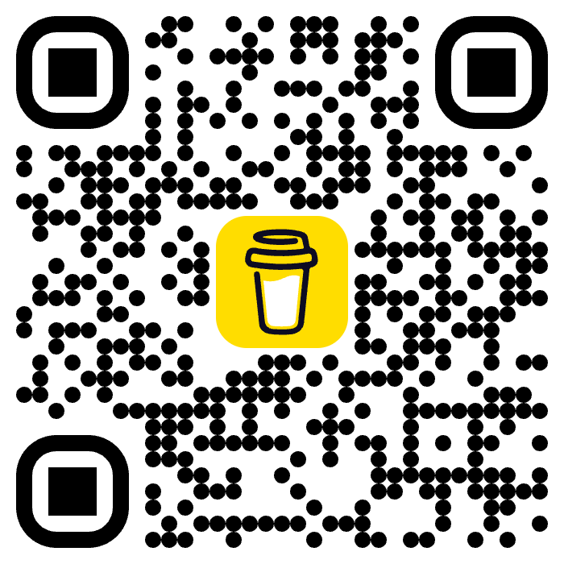

Chan Desktop
chan version n/a
Fund the work
Chan is independent software. Small tips help cover time spent on releases, packaging, and documentation. Share the love, cheers!

Built on a strong open-source foundation. Chan is free and open-source software.